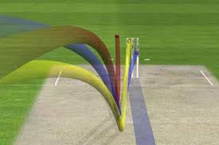
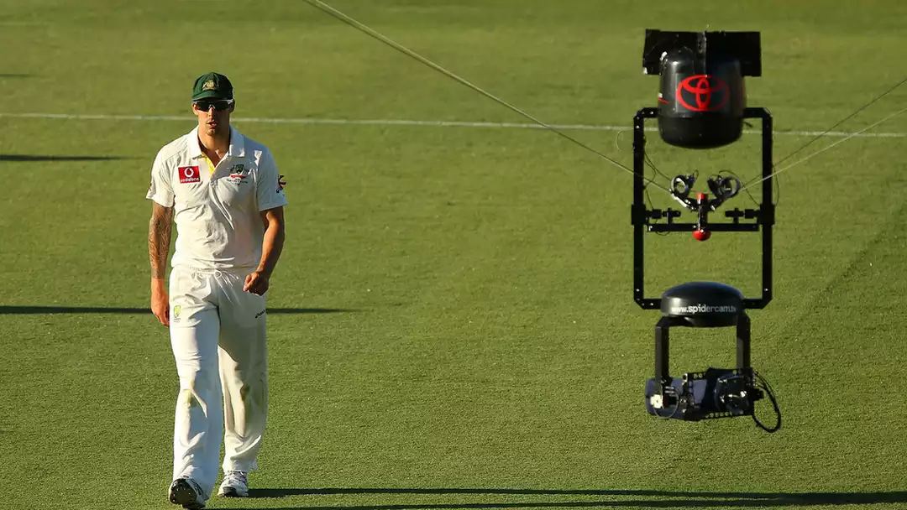
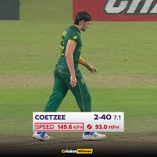
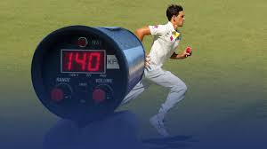
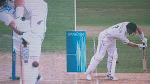

Technology Used in Cricket
Author: Utsab Gautam
Author: Utsab Gautam
Cricket is a bat-and-ball sport played between two teams, traditionally consisting of 11 players each. Originating in England during the 16th century, it has grown into one of the most loved games worldwide. Today, cricket ranks 2nd in global sports popularity, with an estimated 2.5 billion fans across the globe. The sport is especially popular in South Asia—including India, Pakistan, Bangladesh, and Sri Lanka—while also having a strong presence in Australia, England, South Africa, New Zealand, and parts of Europe. Cricket is played in various formats, ranging from the classic five-day Test matches to the thrilling One-Day Internationals (ODIs) and fast-paced Twenty20 (T20) games. Its combination of strategy, skill, and excitement has helped it become not just a sport, but a cultural phenomenon in many countries. Over the years, cricket has evolved with the introduction of modern technology, improving fairness, accuracy, and fan engagement.
There is a consensus of expert opinion that cricket may have been invented during Saxon or Norman times by children living in the Weald, an area of dense woodlands and clearings in south-east England. The first reference to cricket being played as an adult sport was in 1611, and in the same year, a dictionary defined cricket as a boys' game. There is also the thought that cricket may have derived from bowls, by the intervention of a batsman trying to stop the ball from reaching its target by hitting it away.
Village cricket had developed by the middle of the 17th century and the first English “county teams” were formed in the second half of the century, as “local experts” from village cricket were employed as the earliest professionals. The first known game in which the teams use county names is in 1709.
In the first half of the 18th Century cricket established itself as a leading sport in London and the south-eastern counties of England. Its spread was limited by the constraints of travel, but it was slowly gaining popularity in other parts of England and Women’s Cricket dates back to the 1745, when the first known match was played in Surrey.
In 1744, the first Laws of Cricket were written and subsequently amended in 1774, when innovations such as lbw, a 3rd stump, - the middle stump and a maximum bat width were added. The codes were drawn up by the “Star and Garter Club” whose members ultimately founded the famous Marylebone Cricket Club at Lord's in 1787. MCC immediately became the custodian of the Laws and has made revisions ever since then to the current day. Rolling the ball along the ground was superseded sometime after 1760 when bowlers began to pitch the ball and in response to that innovation the straight bat replaced the old “hockey-stick” style of bat. The Hambledon Club in Hampshire was the focal point of the game for about thirty years until the formation of MCC and the opening of Lord's Cricket Ground in 1787. Cricket was introduced to North America via the English colonies as early as the 17th century, and in the 18th century it arrived in other parts of the globe. It was introduced to the West Indies by colonists and to India by British East India Company mariners. It arrived in Australia almost as soon as colonisation began in 1788 and the sport reached New Zealand and South Africa in the early years of the 19th century.
Cricket’s transition from a domestic pastime to a global sport was marked by the emergence of international contests. The first recognized international cricket match took place in 1844 between Canada and the United States in New York. Although limited in scope, this match demonstrated cricket’s appeal beyond England and its colonies.
The first official Test match, which established cricket as an international sport in its modern form, was played between Australia and England at the Melbourne Cricket Ground (MCG) in March 1877. Australia won the match by 45 runs, and this event laid the foundation for Test cricket, the pinnacle format of the sport. Following this, international tours and competitions became increasingly common, including the establishment of the Ashes series in 1882 between England and Australia. Over time, cricket spread to Asia, Africa, and the Caribbean, leading to the formation of the International Cricket Council (ICC) to govern international competitions, standardize rules, and promote cricket globally.
A number of words are thought to be possible sources for the term "cricket". In the earliest definite reference, it was spelled creckett. The name may have been derived from the Middle Dutch krick(-e), meaning a stick; or the Old English cricc or cryce meaning a crutch or staff, or the French word criquet meaning a wooden post. The Middle Dutch word krickstoel means a long low stool used for kneeling in church; this resembled the long low wicket with two stumps used in early cricket. According to Heiner Gillmeister, a European language expert of the University of Bonn, "cricket" derives from the Middle Dutch phrase for hockey, met de (krik ket)sen (i.e., "with the stick chase").
It is more likely that the terminology of cricket was based on words in use in south-east England at the time and, given trade connections with the County of Flanders, especially in the 15th century when it belonged to the Duchy of Burgundy, many Middle Dutch[11] words found their way into southern English dialect.
As cricket evolved from village matches to a more organized sport, the need for standardized rules and structured gameplay became apparent. The first formal Laws of Cricket were codified in 1744 and subsequently revised in 1774 to include innovations such as the Leg Before Wicket (LBW) rule, the addition of the middle stump, and restrictions on bat width. These early regulations, later maintained by the Marylebone Cricket Club (MCC), established consistent pitch dimensions, overs, and player roles, creating a uniform framework for domestic and international play.
The game’s structure also became more defined: specialized roles emerged for batsmen, bowlers, and fielders, and strategic field placements started being employed. This formalization allowed cricket to expand globally, facilitating organized competitions and laying the groundwork for later technological interventions to enhance fairness, accuracy, and fan engagement.From its origins in England, cricket gradually expanded to become a global sport. The British Empire played a central role in introducing cricket to its colonies, including India, Australia, the West Indies, South Africa, and New Zealand, during the 17th and 18th centuries. By the 19th century, cricket had developed strong domestic structures in these regions, with local clubs and national teams emerging.
The formalization of international competitions further solidified cricket’s global presence. The first Test match was played between Australia and England in 1877, marking the beginning of official international cricket. Over time, limited-overs formats such as One Day Internationals (ODIs) and Twenty20 (T20) were introduced, making the game faster-paced and more appealing to modern audiences. The establishment of the International Cricket Council (ICC) provided a governing body to standardize rules, organize tournaments, and promote cricket worldwide. Today, cricket is not only a professional sport but also a cultural phenomenon in many countries, drawing billions of fans globally. Its international appeal has made technological interventions—such as video replays, performance analytics, and smart equipment—essential for maintaining fairness, enhancing performance, and engaging spectators across diverse formats and regions.Definition: Traditional cricket refers to the period when the sport was played without technological assistance, relying entirely on human judgment, manual scoring, and basic equipment. In traditional cricket, several challenges affected both the fairness of the game and the spectator experience. Umpiring decisions were entirely dependent on human perception, which often led to controversial calls, especially for close LBW appeals, run-outs, and faint edges. Player performance analysis was limited to observation and anecdotal feedback, making it difficult for coaches to design precise training programs or prevent injuries. Additionally, as cricket’s popularity grew, fans demanded more engaging experiences, including accurate statistics, instant replays, and live updates. The traditional methods of scoring and broadcasting were insufficient to meet these expectations. These limitations highlighted the need for technological interventions, paving the way for innovations such as video replays, decision review systems, wearable performance trackers, and data analytics. With these challenges in mind, the evolution of cricket into a modern, technology-assisted sport became not only desirable but essential
During the starting phase of cricket, there was no involvement of technology in the game. Every aspect, from umpiring decisions to scoring, relied solely on human judgment. However, with the rapid rise in fan engagement and the growing global interest in cricket, it became necessary to integrate technology. The primary motivation was not only to enhance the viewing experience of fans but also to ensure fairness and accuracy in umpiring decisions. As the game became more competitive and closely contested, even a single incorrect decision could change the outcome of a match. Therefore, the development and adoption of technology in cricket became essential to maintain the integrity of the sport, build spectator trust, and modernize the game in line with global sporting standards.
Radio Broadcasting:During the evolution of cricket the fan base was increasing rapidly. Not everyone can have a reach to watch cricket in ground (pitch).To make a reach of cricket to everyone broadcasting was necessary . So seeing this situation there is a decision of ICC to broadcast cricket so everyone can get reach to it.Cricket broadcasting has a rich history that stretches back to the beginning of the 20th century. Australia played against England and this was broadcasted by BBC in the first ever live radio commentary of a cricket match in 1922. To numerous supporters, the commentator’s voice brought the game to life because they were able to picture what was taking place at the field.

Television Broadcasting: Television was taken as a new medium for sports, was introduced in the 1930’s. However, the early cricket broadcasts could only be viewed on small black-and-white TV screens. Most of these transmissions had low picture quality and there were very few camera angles. Nevertheless, it was an incredible development that enabled supporters to see events as they happened. The television broadcasting, which allowed fans to watch matches live and analyze gameplay. By the 1980s, broadcasters began using slow-motion replays to highlight key moments, although umpires initially did not rely on them. The third umpire system, introduced in 1992 during the India vs. South Africa Test, marked the first official use of technology in decision-making. The first decision involved a run-out, setting a precedent for video-assisted umpiring.

Satellite Revolution of the 1990s: While coming to late 90’s and early 2000’s the interest of people in cricket was increased rapidly across the whole world. By seeing this rapid increase in interest in cricket by people the satellite T.V has also interest to broadcast a cricket in their respective channel. The Satellite TV channel networks like Star Sports, ESPN, Sky Sports, and SuperSport changed the broadcasting game forever. With this came with , Slow-motion replays, Better commentary panels, Pre- and post-match analysis . This era also saw the rise of iconic broadcasters like Richie Benaud, Tony Greig, and Harsha Bhogle—voices that became as loved as the players themselves. But here’s something not many fans realize: until the late 2000s, broadcasters controlled the production. They decided camera placements, graphics, and even replays. Cricket boards were just content partners. That changed when boards like the BCCI, ECB, and Cricket Australia took over the reins of production. This shift gave them control over the content narrative, branding, and even sponsorship overlays

OTT Platforms: As broadband penetration and mobile internet grew, major sports broadcasters began launching dedicated OTT platforms. Platforms such as Hotstar (India, 2015), Willow TV (US), and Sky Go (UK) enabled fans to stream live cricket matches, access highlights, and watch exclusive content on-demand. OTT services also offered multiple camera angles, commentary options, and real-time statistics, greatly enhancing viewer engagement.

Hot Spot made its debut in the 2006/07 Ashes series. Hot Spot is an infrared image tracking technology used to determine if the ball has struck the batsman, the bat, pad, or body. It was first developed for the military but has since been incorporated to good effect in cricket. Hot Spot incorporates infrared cameras around the ground. It works on the principle that friction generates heat at the point of impact. High-sensitivity infrared cameras capture this thermal energy, which is then processed using electronic circuits and software algorithms to produce a visual overlay on standard video footage, highlighting the contact as a glowing mark. Key factors include sensor resolution, fast frame rates, and calibration to filter ambient temperature variations. Hot Spot enhances umpiring accuracy by detecting faint edges and complements other systems like Ultra-Edge, demonstrating the effective integration of electronics and thermal imaging in modern cricket.

Hawk-Eye is a ball-tracking system that uses multiple high-speed cameras placed around the stadium to capture the ball’s position from different angles. The cameras feed video data to a computer system, which uses triangulation algorithms and predictive modeling to reconstruct the ball’s 3D trajectory. The system accounts for spin, bounce, and pitch behavior, providing accurate visualizations of ball movement. Hawk-Eye is primarily used to adjudicate LBW decisions, review catches near the boundary, predict ball paths for DRS, analyze bowling and batting patterns, and provide real-time graphics for broadcasters, enhancing both umpiring accuracy and viewer engagement.
LED stumps, also known as Zing bails, are equipped with electronic sensors and microcontrollers that detect even the slightest dislodgement when the ball hits the stumps or the wicketkeeper removes the bails. The system uses low-voltage circuitry connected to light-emitting diodes (LEDs) embedded inside the stumps and bails, which instantly flash when contact is made, powered by small rechargeable batteries. This technology provides a response time of just a few milliseconds, far quicker than the human eye can perceive. LED stumps are mainly used to determine close run-outs, stumpings, and bowled dismissals with high precision, while also adding a visual spectacle that engages fans and improves broadcast appeal.

Pitch Vision is a portable motion-tracking and video analysis system that uses embedded sensors, high-speed cameras, and image-processing software to record and analyze cricketing actions in real time. The system tracks the ball’s speed, bounce, line, length, and deviation, while also monitoring batting strokes through sensor-based mats and cameras placed around the pitch. Data is processed electronically and displayed on laptops or mobile devices, offering instant 3D replays, wagon wheels, and performance metrics. PitchVision is widely used in coaching and training to assess player technique, simulate match conditions, provide feedback for improvement, and enhance player development through data-driven analysis

Spidercam is an advanced aerial camera system that operates on a cable-suspended mechanism controlled by computer-driven motors and winches placed at the corners of the stadium. The camera unit, equipped with gyroscopic stabilization, high-definition sensors, and wireless transmitters, moves smoothly in three dimensions (X, Y, and Z axes) above the ground. Operators control its motion through a joystick while real-time video is transmitted to broadcasting systems. Spidercam is mainly used to provide dynamic aerial shots, immersive replays, and unique viewing angles for fans, enhancing broadcast quality, storytelling, and audience engagement during live cricket matches.
A speed gun is a radar-based device used to measure the velocity of a cricket ball immediately after release from the bowler’s hand. It operates on the Doppler radar principle, where a transmitter emits microwave signals that bounce off the moving ball, and the frequency shift between transmitted and received waves is processed by electronic circuits to calculate speed. Modern speed guns are integrated with digital displays and broadcasting systems to provide instant readings. They are mainly used to record bowling speeds, compare fast bowlers, aid in performance analysis, and enhance the viewing experience for fans by showcasing pace variations during matches.
 Drones equipped with high-definition cameras, GPS modules, and wireless transmitters are increasingly used in cricket broadcasting and analysis. These unmanned aerial vehicles (UAVs) are controlled remotely and stabilized using electronic gyroscopes and autopilot systems, allowing them to capture smooth aerial shots of the stadium and surrounding environment. Integrated with live-feed transmission systems, drones provide broadcasters with unique angles, panoramic stadium views, and dynamic replays that were previously impossible with fixed or cable-suspended cameras. Apart from broadcasting, drones are also explored for security surveillance in stadiums and for creating engaging fan experiences


Ultra-Edge, also known as the upgraded Snickometer, is an advanced sound-based technology used to detect faint edges between the bat and ball. It works by using sensitive stump microphones connected to an oscilloscope-like system that records sound waves at high frequencies. When the ball passes close to the bat, even the slightest contact produces a spike on the waveform, which is synchronized with slow-motion video replay for accuracy. The system uses digital signal processing (DSP) to filter background noise and highlight genuine edges. Ultra-Edge is widely used in Decision Review System (DRS) to assist umpires in judging caught-behind or LBW appeals, ensuring fairer and more accurate decision-making.
Modern innovations are exploring the use of smart cricket balls embedded with micro-sensors, accelerometers, and gyroscopes to provide real-time tracking data. Unlike Hawk-Eye, which relies on external cameras, these sensor-equipped balls measure parameters such as speed, spin rate, seam orientation, trajectory, and release angle directly from within the ball. Data is transmitted wirelessly to computer systems using low-power communication modules (like Bluetooth or RF). This technology allows far more precise analysis of a bowler’s biomechanics, monitoring workload, and preventing injuries. It can also revolutionize umpiring decisions by offering accurate ball-path predictions for LBW or edge cases, while enhancing fan engagement with in-depth analytics displayed during live broadcasts.
Artificial Intelligence (AI) and Data Analytics have transformed cricket into a data-driven sport, providing deep insights into both player and team performance. Using machine learning algorithms, computer vision, and predictive modeling, vast amounts of data from ball-tracking systems, wearables, and match footage are analyzed in real time. AI can predict player performance trends, evaluate opposition weaknesses, and assist coaches in formulating match strategies. For example, data-driven analysis helps bowlers plan deliveries by studying a batter’s scoring zones or strike rotation patterns. In addition, AI-powered video analytics allow automatic tagging of events such as boundaries, wickets, or no-balls, reducing manual work. On the medical side, analytics assist in injury prediction and workload management by processing biomechanical and fitness data. For fans, AI enhances engagement through predictive win percentages, virtual simulations, and personalized OTT experiences. Overall, AI and analytics are bridging the gap between raw performance and strategic decision-making in modern cricket.

Cricket, a bat-and-ball sport originating in 16th-century England, has grown into a globally popular game with billions of fans, particularly in South Asia, Australia, England, and the Caribbean. From its early village origins to the first formalized laws in 1744 and the first Test match in 1877, cricket developed structured rules, standardized player roles, and international competitions. The name “cricket” likely derives from Middle Dutch, Old English, or French terms related to sticks or posts. Traditional cricket faced challenges such as inaccurate umpiring, limited performance analysis, and minimal fan engagement.
decision-making, and enhance the spectator experience. Innovations include broadcasting advancements (radio, television, satellite, and OTT platforms), decision-assist technologies like Hot Spot, Hawk-Eye, LED stumps, PitchVision, Spidercam, Ultra-Edge, and smart sensor-equipped balls. Player performance and training have been revolutionized with wearable technology, AI & data analytics, and VR/AR systems, while drones and Spidercam provide dynamic coverage for fans. Modern technology in cricket not only improves umpiring accuracy and player safety but also enhances strategy, performance evaluation, and global fan engagement